Parte 1 · Bancada¶
Protocolos utilizados no Curso de Montagem de Genomas de Referência com dados Nanopore, do DNA de alto peso molecular até o sequenciamento na plataforma Oxford Nanopore PromethION 2 (P2).
Antes de começar
O curso inicia com o DNA de alto peso molecular já extraído. A Etapa 1 apresenta os protocolos de extração recomendados para cada tipo de organismo.
Etapas¶
Etapa 1 · Extração de DNA de alto peso molecular¶
Para o sequenciamento de fragmentos longos com a tecnologia Oxford Nanopore, é necessário obter DNA de alto peso molecular, com o mínimo possível de fragmentação e de contaminantes. Para isso, existem procedimentos otimizados, tanto protocolos caseiros quanto kits comerciais.
Tabela 1. Protocolos de extração utilizados pelo grupo para diferentes organismos.
| Grupo | Tecido | Protocolo de extração |
|---|---|---|
| Plantas | Folhas | Extração HMW para plantas (protocolo caseiro) |
| Fungos | Micélio | Extração HMW para plantas (protocolo caseiro) |
| Animais | Sangue | Monarch HMW DNA Extraction Kit para sangue (T3050) |
| Animais | Músculo | Monarch HMW DNA Extraction Kit para tecido (T3060) |
| Animais | Insetos (corpo) | Monarch HMW DNA Extraction Kit para tecido (T3060) |
Observação
Os protocolos detalhados de extração são disponibilizados pela coordenação do curso.
Etapa 2 · Controle de qualidade do DNA extraído¶
O controle de qualidade começa pela avaliação da pureza no Nanodrop. Em seguida, avalia-se a integridade do DNA por eletroforese capilar no TapeStation e faz-se a quantificação com os reagentes Qubit Broad Range.
- Pureza: Nanodrop (abaixo)
- Integridade: TapeStation, DNA genômico
- Quantificação: Qubit dsDNA Broad Range
Avaliação de ácidos nucleicos (Nanodrop)¶
O Nanodrop (ThermoFisher) quantifica e avalia a pureza de ácidos nucleicos por espectrofotometria UV-Vis de microvolumes. O DNA absorve a 260 nm, as proteínas a 280 nm, e contaminantes como fenol, sais e carboidratos a 230 nm.
Reagentes e materiais: equipamento Nanodrop (ThermoFisher), computador, amostras de ácidos nucleicos, água ou tampão de eluição, ponteiras, pipetas e papel para limpeza.
Procedimento:
- Ligue o computador e abra o software do Nanodrop.
- Faça a medida do branco com água ou com o mesmo tampão usado para eluir o DNA na extração.
- Pipete 1 a 2 µL de água ou tampão no pedestal, abaixe o braço do Nanodrop e clique em Blank.
- Limpe o pedestal com papel limpo, fino e seco.
- Pipete 1 µL da amostra no pedestal, abaixe o braço e clique em Measure.
- Anote ou salve a concentração e as razões.
- Limpe o pedestal com papel limpo, fino e seco.
- Meça a próxima amostra.
- Não é necessário medir o branco entre as amostras, mas é recomendado lê-lo novamente a cada 30 minutos.
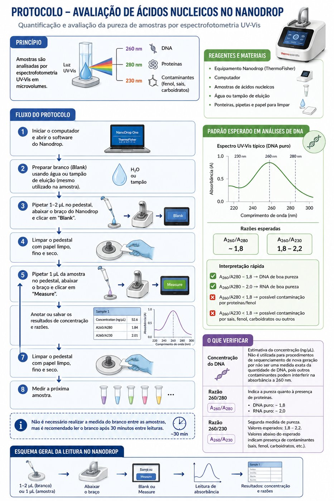
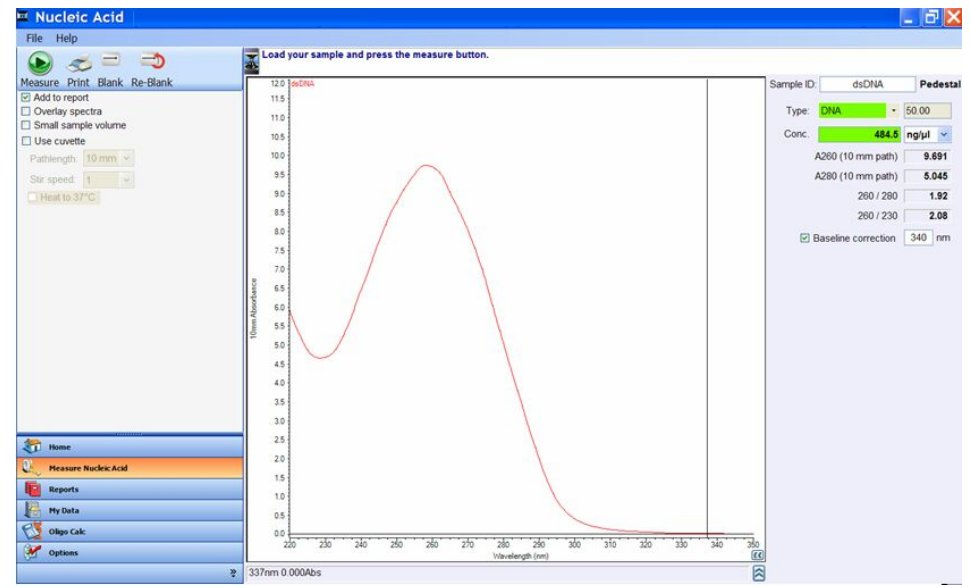
Como interpretar:
| Medida | Significado | Valor esperado |
|---|---|---|
| Concentração (ng/µL) | Estimativa da concentração. Não é usada para sequenciamento, pois contaminantes interferem na absorbância a 260 nm. | — |
| Razão 260/280 | Pureza em relação a proteínas. | ~1,8 (DNA) · ~2,0 (RNA) |
| Razão 260/230 | Pureza em relação a outros contaminantes. Valores baixos indicam contaminação. | 1,8 a 2,2 |
Etapa 3 · Diluição do DNA¶
Dilui-se o DNA de alto peso molecular para a etapa de fragmentação. O objetivo é obter no mínimo 100 ng/µL em um volume mínimo de 200 µL.
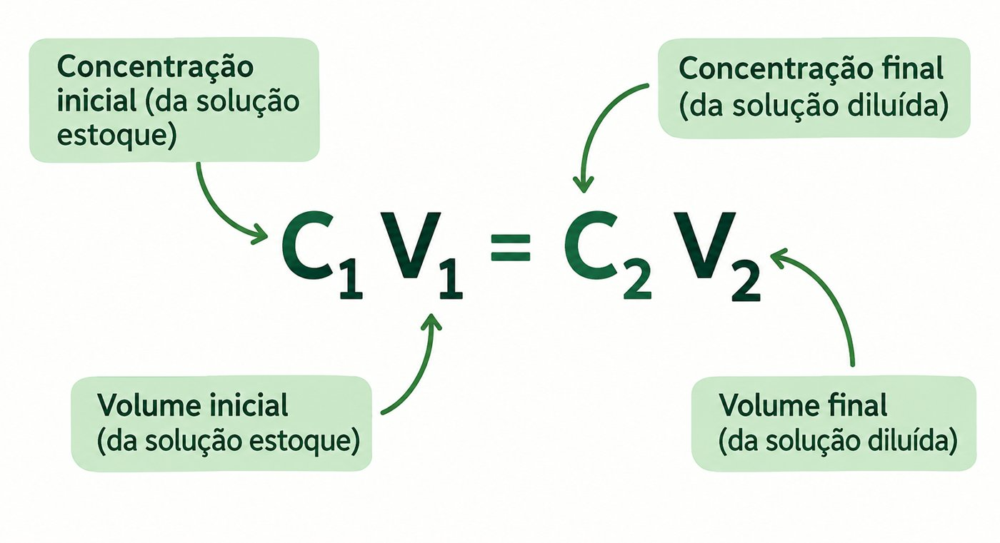
Reagentes e materiais: DNA de alto peso molecular, tampão de eluição ou Tris-HCl 10 mM pH 8,5, tubos de 1,5 mL.
Procedimento:
- Após a quantificação do DNA, faça os cálculos com a fórmula acima.
- Dilua uma alíquota de DNA, adicionando o volume calculado de DNA e completando com tampão de eluição ou Tris-HCl.
Etapa 4 · Fragmentação do DNA¶
A fragmentação controlada com seringa e agulha de insulina é necessária para a inserção dos adaptadores de sequenciamento nas extremidades das moléculas. Ela não pode ser intensa, pois é preciso manter fragmentos grandes para o sequenciamento de leituras longas. Essa etapa é opcional e ajuda a obter moléculas de comprimento mais uniforme, maximizando o rendimento do sequenciamento.
Adaptado de DNA clean-up and size selection for long-read sequencing V.4.
| Agulha | Passagens | N50 estimado |
|---|---|---|
| 26G | 20 a 40 | 40 kb |
| 29G | 10 a 20 | 20–35 kb |
Procedimento:
- Coloque uma alíquota de aproximadamente 15 µg de DNA (100 ng/µL) em um tubo Eppendorf DNA LoBind de 1,5 mL. Ajuste o volume para exatamente 200 µL com EB (kit Monarch) ou TE pH 8.
- Conecte a agulha à seringa e faça de 20 a 40 passagens, ou seja, aspire e dispense o DNA de 20 a 40 vezes.
- As passagens devem ser o mais uniformes possível.
- Após a fragmentação, faça o controle de qualidade no TapeStation para verificar o resultado.
Quando fragmentar
A fragmentação deve ser feita em amostras com perfil de DNA acima de 60 kb no TapeStation.
Etapa 5 · Seleção de fragmentos de DNA¶
Esta etapa elimina fragmentos menores que 10 kb, gerados na extração ou na fragmentação com seringa. É opcional e depende da quantidade inicial de DNA: não é recomendada quando há menos de 10 µg de DNA total.
Short Fragment Eliminator Kit (EXP-SFE001), Oxford Nanopore¶
O kit remove fragmentos curtos (< 10 kb) de amostras de DNA genômico. O DNA é misturado a um volume igual de tampão SFE e centrifugado para precipitar o DNA de alto peso molecular, que é depois ressuspendido em solução aquosa.
Traduzido e adaptado de nanoporetech.com/document/requirements/sfe-know-how.
Equipamentos e materiais: Short Fragment Eliminator Kit (EXP-SFE001), ponteiras comuns e de ponta larga (wide-bore), etanol 80% recém-preparado, 3 a 10 µg de DNA de alto peso molecular, tubos Eppendorf DNA LoBind de 1,5 mL e centrífuga de microtubos.
Recomendações (clique para expandir)
- Massa de DNA: entre 3 e 10 µg. Com menos de 3 µg não haverá DNA suficiente para o preparo da biblioteca.
- Solução tampão: armazene as amostras em TE. Outras soluções podem reduzir a eficiência da seleção de tamanho.
- Homogeneidade da amostra: é essencial, sobretudo para DNA de alto peso molecular. Meça no Qubit as partes inferior, média e superior da amostra. Se as leituras forem inconsistentes (CV > 20%), incube a 50 °C com agitação suave ou misture delicadamente com pipeta wide-bore, garantindo que todo o volume seja misturado.
- Viscosidade do SFE: o tampão é viscoso. Misture todo o volume com a pipeta 10 a 15 vezes antes de usar e garanta que esteja à temperatura ambiente.
- Centrifugação: ajuste a centrífuga para 22 °C e só coloque as amostras quando essa temperatura for atingida. O pellet pode ser difícil de ver: posicione a dobradiça do tubo voltada para fora no rotor, de modo que o pellet fique do lado da dobradiça, e aspire o sobrenadante pelo lado oposto.
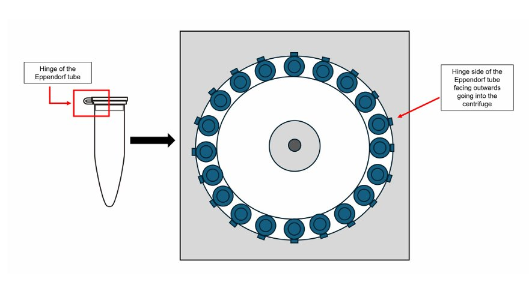
Procedimento:
- Em um tubo Eppendorf DNA LoBind de 1,5 mL, adicione 100 µL de DNA a 100 ng/µL (10 µg de DNA).
- Certifique-se de que o tampão SFE está à temperatura ambiente.
- Adicione um volume igual (100 µL) de tampão SFE à amostra.
- Com uma ponteira wide-bore ajustada para 200 µL, misture lenta e suavemente 10 a 15 vezes, até a solução ficar homogênea.
- Coloque o tubo na centrífuga com a dobradiça voltada para fora e equilibre com outros tubos. Confira a orientação e a temperatura antes de iniciar.
- Centrifugue a 10.000 × g, a 22 °C, por 30 minutos.
- Com uma ponteira de calibre estreito, remova lentamente a maior parte do sobrenadante (deixando ~15–20 µL), aspirando pelo lado oposto ao pellet, e descarte.
- Lave com etanol:
- Adicione lentamente 200 µL de etanol 80% recém-preparado, pelo lado oposto ao pellet, sem perturbá-lo.
- Centrifugue a 10.000 × g por 3 minutos, com a mesma orientação dos tubos (dobradiça para fora).
- Com uma ponteira de calibre estreito, aspire lentamente o sobrenadante pelo lado oposto, sem perturbar o pellet.
- Após a primeira lavagem, o pellet costuma ficar mais visível (branco, no fundo, do lado da dobradiça). Se estiver visível, descarte o máximo de etanol possível. Se não estiver, deixe ~20 µL de sobrenadante para não aspirá-lo por engano.
- Repita a lavagem (passo 8), totalizando duas lavagens. Depois da segunda, o pellet geralmente fica bem visível, e o etanol residual pode ser retirado com uma pipeta de 10 µL.
- Elua o DNA: adicione 50 µL de TE (10 mM Tris-HCl, 0,1 mM EDTA, pH 8,0) e misture com ponteira wide-bore.
- Incube em termomixer a 50 °C e 300 rpm por 30 minutos, agitando suavemente a cada 5 minutos. Opcional: deixe eluir durante a noite à temperatura ambiente.
- Quantifique a amostra três vezes com o Qubit dsDNA BR, lendo as partes superior, média e inferior do tubo. As leituras devem ser consistentes antes de seguir.
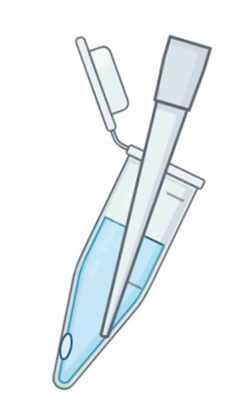
Etapa 6 · Controle de qualidade após a fragmentação¶
Verifica a concentração e o perfil de tamanho do DNA após a fragmentação e a eliminação dos fragmentos curtos.
- Quantificação: Qubit dsDNA Broad Range
- Perfil de tamanho: TapeStation, DNA genômico
Etapa 7 · Preparo da biblioteca genômica¶
O DNA é preparado para o sequenciamento: as extremidades dos fragmentos são reparadas e recebem os adaptadores específicos da plataforma.
Ligation Sequencing Kit V14 (SQK-LSK114)¶
Antes de começar:
- Extraia o DNA e verifique tamanho, quantidade e pureza (Etapas 1 a 6).
- Confira se todos os reagentes do kit, dos equipamentos e das empresas parceiras estão disponíveis.
- Verifique a flow cell para garantir um número suficiente de poros.
- O DNA deve ter concentração acima de 22 ng/µL para iniciar com os 1.000 ng recomendados.
Compatibilidade
Este protocolo só pode ser usado com: Ligation Sequencing Kit V14 (SQK-LSK114), Control Expansion (EXP-CTL001), flow cells R10.4.1 e Flow Cell Wash Kit (EXP-WSH004).
Atenção
Use o Ligation Buffer (LNB) do kit e não substitua o Ligation Adapter (LA). Embora a empresa parceira recomende o tampão da própria ligase, a eficiência de ligação do adaptador é maior com o LNB.
Equipamentos e materiais (clique para expandir)
- 1 µg (ou 100–200 fmol) de DNA genômico ou amplicon de alto peso molecular, ou mais de 100 ng de DNA genômico de alto peso molecular se houver fragmentação
- Ligation Sequencing Kit V14 (SQK-LSK114)
- NEBNext Companion Module for Oxford Nanopore Technologies Ligation Sequencing (E7180S ou E7180L), ou os três produtos:
- NEBNext FFPE DNA Repair Mix (M6630)
- NEBNext Ultra II End Repair/dA-Tailing Module (E7546)
- NEBNext Quick Ligation Module (E6056)
- Tubos Eppendorf DNA LoBind de 1,5 mL e tubos de 0,2 mL para PCR
- Água livre de nucleases e etanol 80% recém-preparado
- Qubit, tubos para Qubit e kit Qubit dsDNA HS
- Hula mixer, separador magnético para tubos de 1,5 mL, microcentrífuga, vórtex, termociclador, pipetas e ponteiras
Reparo do DNA e end-prep (~35 minutos)¶
- Descongele o DNA Control Sample (DCS) à temperatura ambiente, centrifugue brevemente, misture por pipetagem e coloque no gelo.
-
Prepare os reagentes NEBNext FFPE DNA Repair Mix e NEBNext Ultra II End Repair/dA-Tailing:
- descongele no gelo;
- agite e inverta o tubo para misturar;
- os tampões Ultra II End Prep e FFPE DNA Repair podem ter um pequeno precipitado: deixe-os chegar à temperatura ambiente, pipete várias vezes e misture no vórtex por alguns segundos;
- o tampão FFPE DNA Repair pode ser amarelado, o que não é problema.
Não use o vórtex nas enzimas NEBNext FFPE DNA Repair ou NEBNext Ultra II End Prep.
-
Prepare o DNA em água livre de nucleases: transfira 1 µg (ou 100–200 fmol) para um tubo de 1,5 mL, ajuste o volume para 47 µL, misture por pipetagem e centrifugue brevemente.
-
Em um tubo de 0,2 mL, misture os reagentes abaixo, pipetando 10 a 20 vezes entre cada adição:
Reagente Volume DNA CS (DCS) 1 µL DNA 47 µL NEBNext FFPE DNA Repair Buffer v2 7 µL NEBNext FFPE DNA Repair Mix 2 µL Ultra II End-Prep Enzyme Mix 3 µL Total 60 µL -
Confirme que a mistura está homogênea pipetando gentilmente e centrifugue brevemente.
- No termociclador, incube a 20 °C por 5 minutos e a 65 °C por 5 minutos.
- Ressuspenda as AMPure XP Beads (AXP) no vórtex (retire-as da geladeira 30 minutos antes).
- Transfira a amostra para um tubo de 1,5 mL.
- Adicione 60 µL das AXP ressuspendidas.
- Incube no Hula mixer por 5 minutos à temperatura ambiente, ou inverta o tubo manualmente por 5 minutos.
- Prepare 500 µL de etanol 80% em água livre de nucleases.
- Centrifugue brevemente e coloque o tubo na estante magnética até o sobrenadante ficar límpido. Mantendo o tubo na estante, descarte o sobrenadante.
- Ainda na estante, lave as beads com 200 µL de etanol 80% sem perturbá-las. Aguarde 30 segundos e descarte o etanol.
- Repita o passo anterior.
- Centrifugue, volte o tubo à estante e retire o etanol residual. Deixe secar por 30 segundos, sem deixar as beads rachar.
- Retire o tubo da estante, ressuspenda o pellet em 61 µL de água livre de nucleases e incube por 2 minutos à temperatura ambiente.
- Coloque na estante magnética por pelo menos 1 minuto, até o sobrenadante ficar límpido.
- Transfira 61 µL do sobrenadante para um tubo de 1,5 mL.
- Quantifique 1 µL no Qubit.
Ponto de parada seguro
A amostra pode ser armazenada a 4 °C ou −20 °C durante a noite.
Ligação do adaptador e limpeza (~20 minutos)¶
- Centrifugue brevemente o Ligation Adapter (LA) e a Quick T4 Ligase e coloque no gelo.
- Descongele o Ligation Buffer (LNB) à temperatura ambiente, centrifugue brevemente e misture por pipetagem (por ser viscoso, o vórtex é ineficiente). Coloque no gelo logo em seguida.
- Descongele o Elution Buffer (EB) à temperatura ambiente, misture no vórtex, centrifugue brevemente e coloque no gelo.
-
Descongele o Long Fragment Buffer (LFB) ou o Short Fragment Buffer (SFB) à temperatura ambiente, misture no vórtex, centrifugue brevemente e coloque no gelo.
LFB ou SFB?
O LFB enriquece fragmentos acima de 3 kb. Para manter fragmentos de todos os tamanhos, use o SFB.
-
Em um tubo de 1,5 mL, misture na ordem abaixo, pipetando 10 a 20 vezes entre cada adição:
Reagente Volume DNA da etapa anterior 60 µL Ligation Buffer (LNB) 25 µL NEBNext Quick T4 DNA Ligase 10 µL Ligation Adapter (LA) 5 µL Total 100 µL -
Confirme que a mistura está homogênea por pipetagem e centrifugue brevemente.
- Incube por 10 minutos à temperatura ambiente.
- Ressuspenda as AMPure XP Beads (AXP) no vórtex.
- Adicione 40 µL das beads à reação e misture.
- Incube no Hula mixer por 5 minutos à temperatura ambiente, ou inverta o tubo manualmente por 5 minutos.
- Centrifugue brevemente, coloque na estante magnética e remova o sobrenadante.
- Lave as beads com 250 µL de LFB ou SFB: misture, centrifugue brevemente, volte à estante e descarte o sobrenadante.
- Repita o passo anterior.
- Centrifugue brevemente, volte à estante e retire qualquer resíduo. Deixe secar por 30 segundos à temperatura ambiente, sem deixar as beads rachar.
- Retire o tubo da estante e ressuspenda o pellet em 25 µL de EB. Centrifugue brevemente e incube por 10 minutos à temperatura ambiente. Para DNA de alto peso molecular, incubar a 37 °C pode melhorar a recuperação de fragmentos grandes.
- Coloque na estante magnética por pelo menos 1 minuto, até o sobrenadante ficar límpido.
- Transfira os 25 µL de sobrenadante com a biblioteca para um tubo limpo de 1,5 mL.
- Quantifique 1 µL no Qubit.
- Dilua a biblioteca para 10–20 fmol em volume final de 32 µL para o carregamento na flow cell. Para leituras longas, carregue cerca de 300 ng de DNA.
Armazenamento
Armazene a biblioteca a 4 °C por pouco tempo, ou a −80 °C para períodos mais longos (até mais de 3 meses).
Etapa 8 · Quantificação da biblioteca¶
Verifica a concentração final da biblioteca para carregar 300 ng de DNA na flow cell. Se a biblioteca tiver menos de 300 ng, carregue todo o volume.
Use o protocolo Qubit dsDNA High Sensitivity (HS), que mede de 0,1 a 120 ng de DNA.
Etapa 9 · Sequenciamento¶
Preparo da flow cell, carregamento da biblioteca e sequenciamento no PromethION 2.
Equipamentos e materiais: biblioteca preparada, Ligation Sequencing Kit V14 (SQK-LSK114), tubos Eppendorf DNA LoBind de 1,5 mL, microcentrífuga, vórtex, pipetas, ponteiras e PromethION 2.
Preparo e carregamento da flow cell¶
- Descongele o Sequencing Buffer (SB), as Library Beads (LIB) ou a Library Solution (LIS), o Flow Cell Tether (FCT) e o Flow Cell Flush (FCF) à temperatura ambiente. Misture no vórtex, centrifugue brevemente e mantenha no gelo.
-
Prepare a mistura de priming em um tubo adequado ao número de flow cells e misture no vórtex à temperatura ambiente:
Reagente Volume por flow cell Flow Cell Flush (FCF) 1.170 µL Flow Cell Tether (FCT) 30 µL Total 1.200 µL -
No PromethION 2 Solo ou Integrated, posicione a flow cell na placa metálica e deslize-a para dentro do encaixe até que os pinos dourados ou a placa verde não fiquem mais visíveis.
- Gire a tampa da porta de entrada (inlet port) no sentido horário para abri-la.
-
Retire um pequeno volume para eliminar bolhas de ar: ajuste uma P1000 para 200 µL, insira a ponteira na inlet port e gire a roda da pipeta até o visor marcar 220–230 µL, ou até ver um pouco de tampão entrar na ponteira.
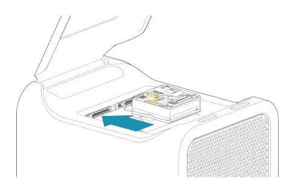
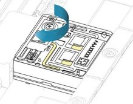
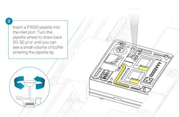
Encaixe da flow cell, abertura da inlet port e remoção de bolhas. Imagens adaptadas da Oxford Nanopore Technologies. -
Carregue 500 µL da mistura de priming pela inlet port, sem introduzir bolhas. Aguarde 5 minutos e, enquanto isso, prepare a biblioteca.
- Misture bem as Library Beads (LIB) pipetando para cima e para baixo.
-
Em um tubo Eppendorf DNA LoBind de 1,5 mL, prepare a biblioteca para o carregamento:
Reagente Volume por flow cell Sequencing Buffer (SB) 100 µL Library Beads (LIB), bem homogeneizadas, ou Library Solution (LIS) 68 µL Biblioteca de DNA 32 µL Total 200 µL -
Complete o priming adicionando lentamente mais 500 µL da mistura pela inlet port.
- Misture delicadamente a biblioteca por pipetagem imediatamente antes do carregamento.
- Carregue 200 µL da biblioteca na inlet port com uma P1000.
- Feche a válvula da inlet port e aguarde 10 minutos antes de iniciar o sequenciamento.
- Se a proteção contra luz (light shield) tiver sido removida, reinstale-a: alinhe o recorte da proteção com a tampa da inlet port, com a borda frontal acima do ID da flow cell, e pressione até o clipe encaixar com um clique.
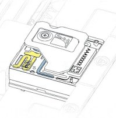
Iniciando o sequenciamento no MinKNOW¶
O MinKNOW controla o equipamento, a aquisição dos dados e o basecalling em tempo real.
- Dê duplo clique no ícone do MinKNOW.
- Clique em Log in with your Nanopore account e entre com seu e-mail e senha da Nanopore.
- No Connection Manager, clique no cartão My device para controlar o equipamento.
- Na página inicial, clique em Start Sequencing.
- Na aba Positions, informe o nome do experimento e o Sample ID, selecione o tipo e a posição da flow cell e clique em Continue to kit selection.
- Selecione o kit utilizado (SQK-LSK114) e clique em Continue to run options.
- Defina a duração da corrida e o comprimento mínimo das leituras, ou mantenha o padrão. Clique em Continue to analysis.
- Escolha o modelo de basecalling SUP (Super Accuracy) e as opções de barcoding e alinhamento, ou mantenha o padrão. Clique em Continue to output.
- Defina o local, o formato e os filtros dos dados. Salve os dados brutos (POD5) e as leituras (FASTQ). Clique em Continue to final review.
- Clique em Start.
Lavagem e armazenamento da flow cell¶
A lavagem digere a biblioteca presente na flow cell e libera os poros para uma nova corrida. Em geral, uma flow cell pode ser lavada e reutilizada de 3 a 6 vezes.
Registre
Espécie · ID do DNA · ID da flow cell · número de poros.
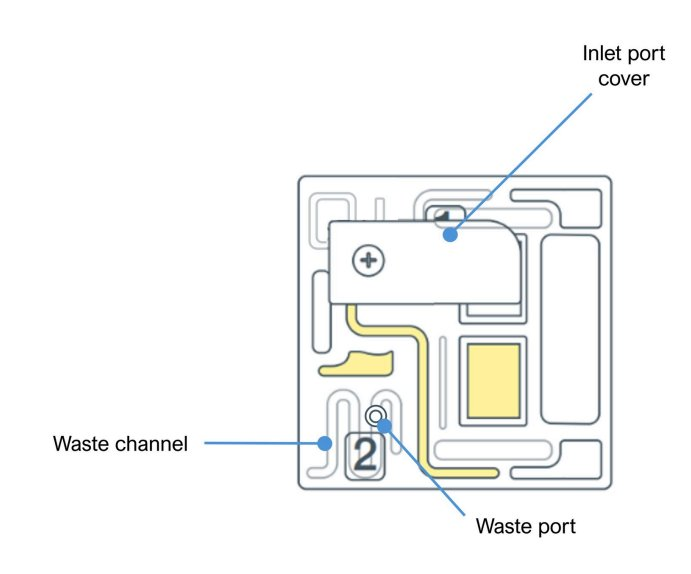
Materiais: Flow Cell Wash Kit (EXP-WSH004 ou EXP-WSH004-XL), pipetas, ponteiras e tubos Eppendorf de 1,5 mL.
Lavagem:
- Mantenha a flow cell no P2 Solo durante toda a lavagem e, sempre que possível, com a proteção contra luz.
- Prepare o wash mix no momento da lavagem. Não use mistura preparada há mais de um dia.
- Coloque o tubo de Wash Mix (WMX) no gelo, sem vórtex.
- Descongele o diluente (DIL) à temperatura ambiente, misture no vórtex, centrifugue brevemente e coloque no gelo.
-
Em um tubo de 1,5 mL, misture por pipetagem (sem vórtex) e mantenha no gelo:
Reagente Volume Wash Mix (WMX) 2 µL Wash Diluent (DIL) 398 µL -
Pare ou pause o sequenciamento e confirme que a tampa da inlet port está fechada.
-
Retire todo o líquido do canal de descarte, aspirando lentamente com uma pipeta de 1.000 µL.
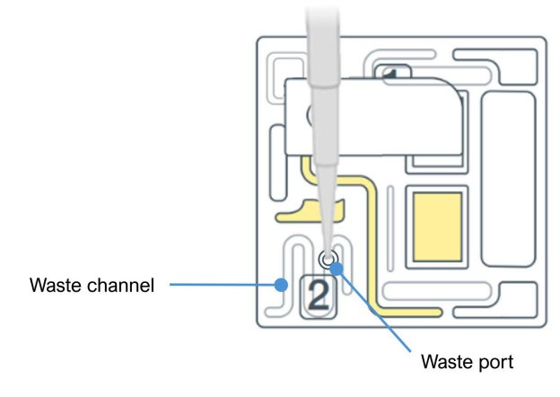
-
Abra a inlet port e retire 20–30 µL com uma pipeta de 1.000 µL, girando lentamente a roda a partir de 200 µL. Nunca pressione o êmbolo; sempre gire a roda.
- Carregue lentamente 200 µL do wash mix na inlet port, em pelo menos 5 segundos.
- Incube por 5 minutos.
- Carregue mais 200 µL do wash mix.
- Feche a inlet port e incube por 1 hora.
- Retire todo o líquido dos canais de descarte.
- A flow cell pode então receber uma nova biblioteca ou ser armazenada.
Armazenamento:
- Descongele um tubo de Storage Buffer (S) à temperatura ambiente.
- Abra a inlet port e retire 20–30 µL com uma pipeta de 1.000 µL ajustada para 200 µL, girando lentamente a roda.
- Carregue lentamente 500 µL de Storage Buffer (S), girando a roda da pipeta, em pelo menos 5 segundos.
- Feche a inlet port.
- Retire todo o líquido dos canais de descarte.
- Faça um Flow Cell Check e anote o número de poros restantes.
- Armazene a flow cell entre 2 °C e 8 °C.
Protocolos de apoio¶
Controle de qualidade de DNA genômico (TapeStation)¶
Eletroforese automatizada em microescala para avaliar a integridade e o tamanho do DNA de alto peso molecular no Agilent 4150 TapeStation (até 16 amostras por corrida), com os reagentes Agilent Genomic DNA. A Genomic DNA ScreenTape tem resolução para fragmentos de até 60.000 pb.
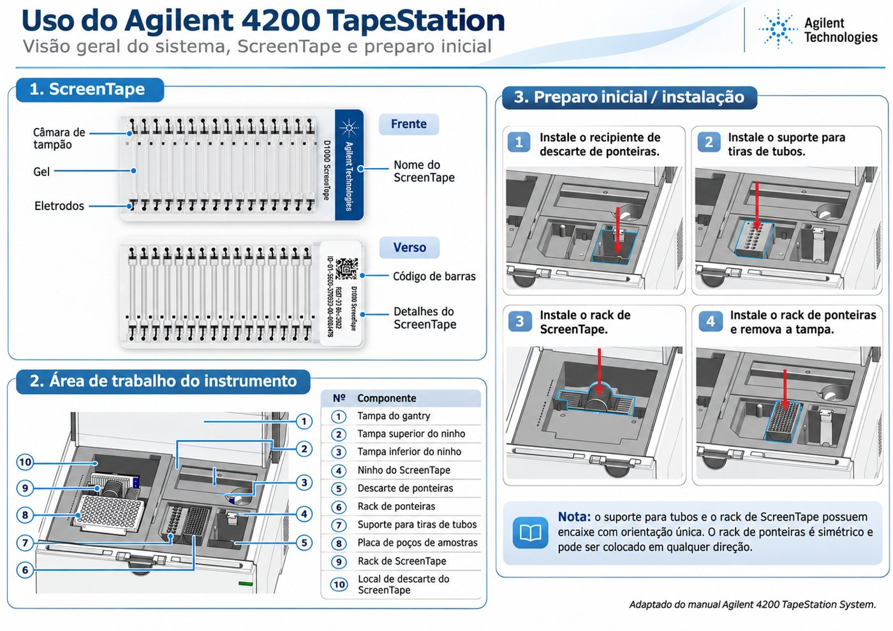
Reagentes e materiais (clique para expandir)
- Agilent 4150 TapeStation (G2992AA)
- Agitador tipo vórtex IKA MS3 e vórtex de bancada
- Tiras de 8 tubos ópticos para PCR (401428) e tampas (401425)
- Ponteiras de carregamento para TapeStation (5067-5598 ou 5067-5599)
- Microcentrífuga para tubos de 1,5 mL
- Agilent Genomic DNA ScreenTape (5067-5365), armazenada a 4 °C
- Agilent Genomic DNA Reagents (5067-5366), com Genomic DNA Sample Buffer e ladder, armazenados a 4 °C
Preparo:
- Deixe os reagentes e a ScreenTape à temperatura ambiente por 30 minutos.
- Misture no vórtex o Genomic DNA Sample Buffer e centrifugue.
- Não use o vórtex no Genomic DNA Ladder (tampa amarela).
Ladder e amostras (1 a 15 amostras):
- Na primeira posição de uma tira de 8 tubos, pipete 10 µL de Genomic DNA Sample Buffer e 1 µL de Genomic DNA Ladder. Marque essa posição como A1.
- Em cada um dos demais tubos, combine 10 µL de Genomic DNA Sample Buffer e 1 µL da amostra de DNA.
- Agite a tira no vórtex IKA a 2.000 rpm por 1 minuto.
- Centrifugue rapidamente para coletar as gotas no fundo.
Corrida:
- Ligue o computador e abra o software Controller. Ligue o TapeStation pelo botão frontal.
- Abra a tampa e insira a ScreenTape no slot superior direito (até 15 amostras + 1 ladder). Confira se o software reconheceu a fita, o tipo e a validade.
- No Controller, selecione as posições dos tubos e informe o nome de cada amostra. O software indica quantas ScreenTapes e ponteiras serão necessárias.
- Confira se há ponteiras suficientes; se não, troque a caixa.
- Retire as tampas da tira e coloque-a no equipamento na posição indicada, com o ladder em A1.
- Feche a tampa e clique em Start Run.
- Ao final, gere o relatório no Agilent TapeStation Analysis Software e salve na pasta Reports.
Quantificação de DNA (Qubit)¶
O Qubit (ThermoFisher) quantifica DNA dupla fita por fluorometria, com alta sensibilidade. É a medida usada para o sequenciamento.
- Faixa: 4 a 2.000 ng de DNA.
- Uso no curso: Etapas 2, 5 e 6.
- Kit: Qubit dsDNA BR Assay Kit (Q32850 ou Q32853).
- Tipo de ensaio no equipamento: dsDNA Broad Range.
- Faixa: 0,1 a 120 ng de DNA.
- Uso no curso: Etapas 7 e 8 (biblioteca).
- Kit: Qubit dsDNA HS Assay Kit (Q32851 ou Q32854).
- Tipo de ensaio no equipamento: dsDNA High Sensitivity.
Materiais: kit Qubit (BR ou HS), Qubit Assay Tubes (Q32856) ou Qubit Flex Assay Tube Strips (Q33252), vórtex e microcentrífuga.
Temperatura
Retire os reagentes da geladeira pelo menos 30 minutos antes. Eles funcionam melhor à temperatura ambiente, e variações de temperatura afetam a exatidão.
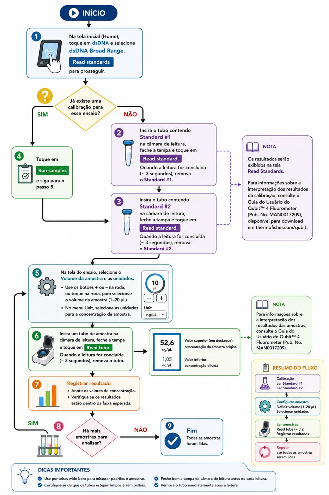
1. Solução de trabalho para os standards (em tubo de 1,5 mL; nunca use tubo de vidro). Misture no vórtex por 3 a 5 segundos.
| Reagente | Volume |
|---|---|
| Qubit Buffer | 398 µL |
| Fluoróforo | 2 µL |
| Total | 400 µL |
2. Standards (em tubos próprios do Qubit, identificados na tampa como #1 e #2). Misture no vórtex por 3 a 5 segundos, centrifugue rapidamente e incube por 2 minutos à temperatura ambiente.
| Reagente | Standard #1 | Standard #2 |
|---|---|---|
| Solução de trabalho | 190 µL | 190 µL |
| Standard | 10 µL | 10 µL |
| Total | 200 µL | 200 µL |
3. Amostras (em tubos próprios do Qubit, identificados na tampa). Misture no vórtex por 3 a 5 segundos, centrifugue rapidamente e incube por 2 minutos à temperatura ambiente.
| Reagente | Volume |
|---|---|
| Qubit Buffer | 198 µL |
| Fluoróforo | 1 µL |
| Amostra | 1 µL |
| Total | 200 µL |
4. Leitura:
- Na tela inicial, toque em dsDNA e selecione o tipo de ensaio (Broad Range ou High Sensitivity). Toque em Read standards. Se o equipamento já estiver calibrado, siga para a leitura das amostras.
- Insira o Standard #1, feche a tampa e toque em Read standard (~3 segundos). Retire o tubo.
- Repita com o Standard #2.
- Toque em Run samples.
- Selecione o volume de amostra usado (1 µL) e a unidade (ng/µL).
- Insira cada tubo de amostra, feche a tampa e toque em Read tube. O valor maior, no alto, é a concentração da amostra original; o menor é a da amostra diluída.
- Repita a leitura para todas as amostras.
Para interpretar a calibração e os resultados, consulte o Qubit 4 Fluorometer User Guide (MAN0017209), disponível no site da Thermo Fisher.
Apostila de protocolos do Laboratório de Genética & Biodiversidade (LGBio/ICB), Universidade Federal de Goiás.